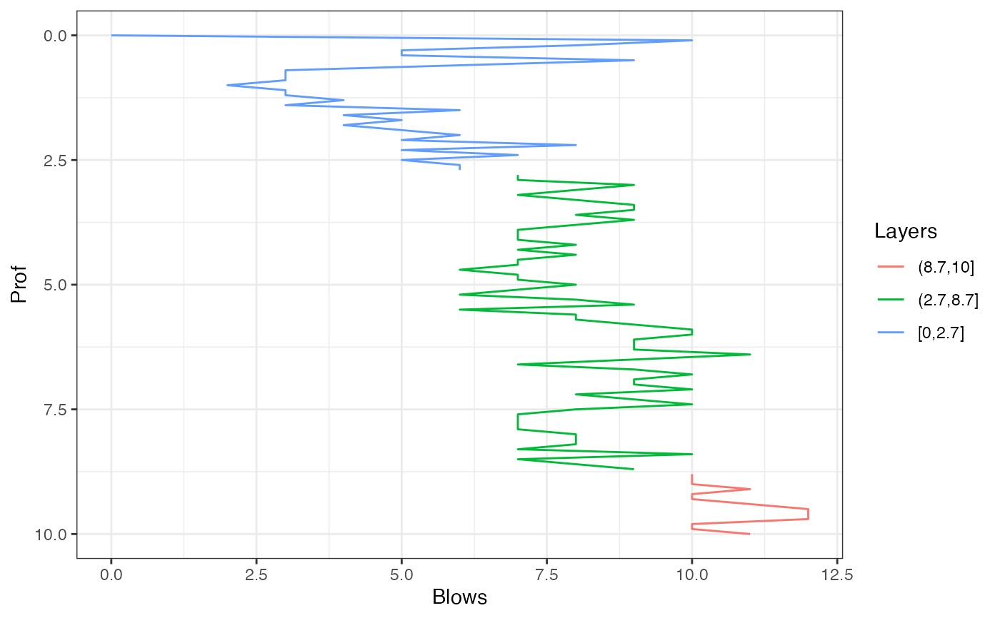
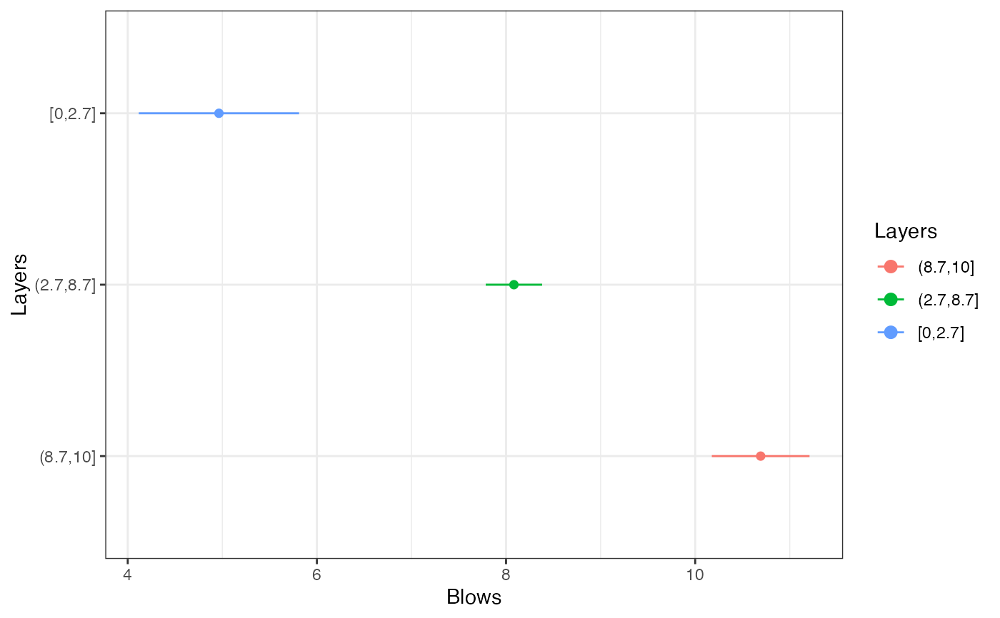

Plots a layered model and summarizes the statistics for each layer from a Changepoint result
Source:R/cp_layers.R
cp_layers.RdGiven a number of breakpoints, plots a layered model of one variable against distance, plots the confidence intervals for each layer, and gives a summary table.
Arguments
- x
The resulting object from
cp_aic_eta()- breaks
An integer giving the number of breakpoints to use (from 'Changepoint')
- conf.level
Confidence level to use for plot and summary statistics (Default is 0.95)
Value
A ggplot and plotly objects showing the layered model, another showing the confidence intervals, and a summary table
See also
Other layer detection:
RI(),
T2_stat(),
T_stat(),
cp_aic_eta(),
layers_window(),
sc_bic(),
sc_layers()
Examples
cp = cp_aic_eta(DPM_data, m = 10, nl = 3)
cp_layers(cp, breaks = 2)
#> $LayersGG

#>
#> $LayersLY
#>
#> $StatsGG

#>
#> $StatsLY
#>
#> $Summary
#> Layers Obs Mean SD Min Max CI.lwr CI.upr MoE
#> 1 [0,2.7] 28 4.96 2.190 0 10 4.12 5.81 0.849
#> 2 (2.7,8.7] 60 8.08 1.150 6 11 7.79 8.38 0.297
#> 3 (8.7,10] 13 10.70 0.855 10 12 10.20 11.20 0.517
#>
#> $ES
#> [1] 0.606
#>